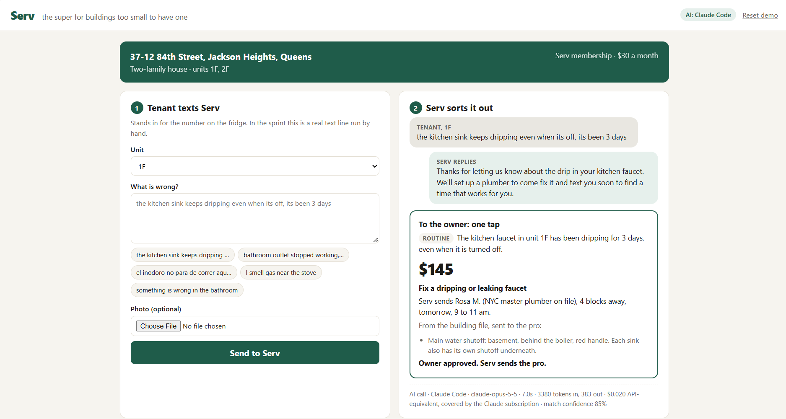
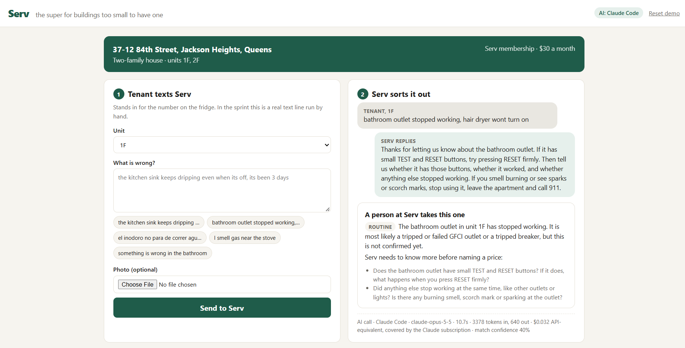
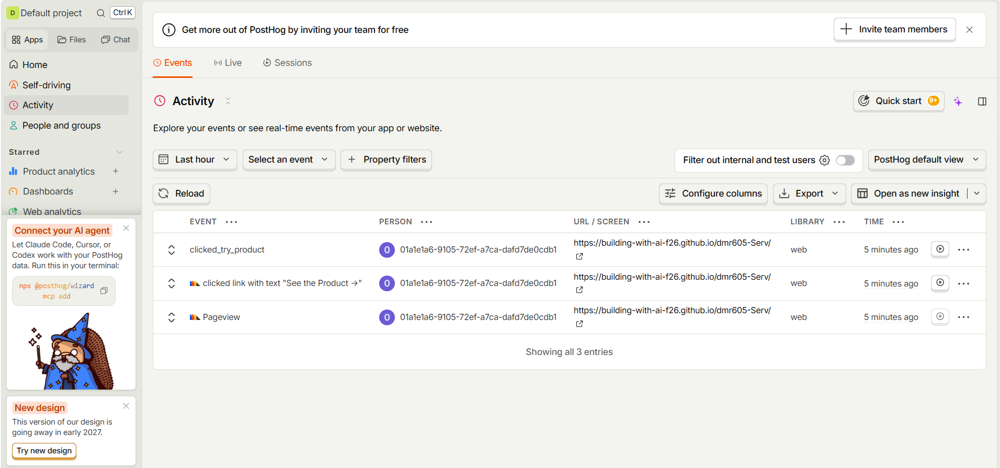
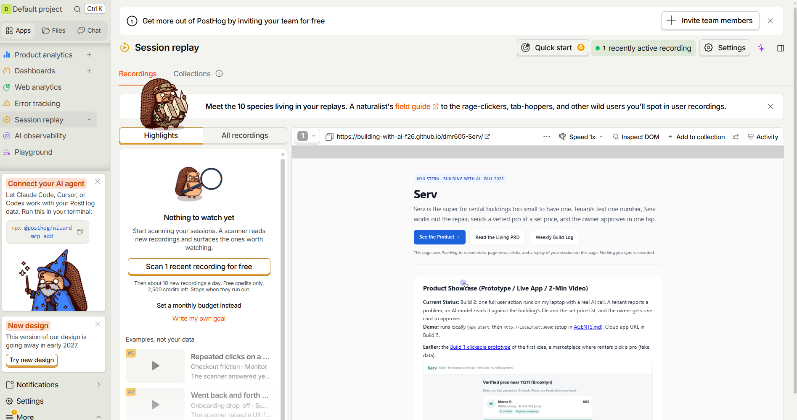

Serv
Serv is the super for rental buildings too small to have one. Tenants text one number, Serv works out the repair, sends a vetted pro at a set price, and the owner approves in one tap.
Product Showcase (Prototype / Live App / 2-Min Video)
Current Status: Build 2: one full user action runs on my laptop with a real AI call. A tenant reports a problem, an AI model reads it against the building’s file and the set price list, and the owner gets one card to approve.
Demo: runs locally (npm start, then http://localhost:3000; setup in AGENTS.md). Cloud app URL in Build 5.


Analytics (PostHog), on this page: the first visit after I added the snippet. Activity shows $pageview, the click on the main button, and clicked_try_product; Session replay recorded the visit.


Earlier: the Build 1 clickable prototype of the first idea, a marketplace where renters pick a pro (fake data).
Living PRD (Product Requirements Document)
1. Target User & The Job to Be Done
Who is this for? Owners of two- to four-family rental houses in one Queens neighborhood. These buildings are too small to have a super, so the owner is the super. The tenants are the second user: they are the ones who notice the leak. I reach owners through a 10-owner trial planned for Nov 16 to Dec 13.
The painful "Before" workflow: A tenant texts the owner that something broke. The owner, often at work, becomes the dispatcher: guesses what the problem is from a blurry photo, calls around for someone free, learns the price only when the pro arrives, pays by cash or Zelle, and keeps no record. The next pro who walks in starts from zero and has to ask where the water shutoff is.
The "After" workflow with this product: The tenant texts one Serv number. Serv reads the message and photo, matches it to a set price list, picks a vetted pro from its own small bench, and sends the owner one card: the job, the price, who is coming and when. The owner taps Approve. The job is added to the building’s file, so the next visit is faster for whichever pro Serv sends.
2. Scope & Explicit Non-Goals
- In Scope (Core Workflow): Tenant reports a problem → Serv triages it against the building file and the 20-line set price list → Serv proposes one pro at one price → owner approves, asks to pick the pro, or says not now → an approved job is written to the building file.
- Out of Scope #1: A real text line. A form in the app stands in for the phone number; during the trial the real number is answered by hand.
- Out of Scope #2: Payments and the monthly membership charge. Nothing is charged; the $30 a month is shown, not billed.
- Out of Scope #3: Owners browsing and choosing pros, pro scheduling, and anything off the price list (pests, appliances, renovations). Those go to a person.
3. How It Works Under the Hood & Riskiest Assumption (Week 2+)
Riskiest Assumption: Owners will let Serv choose the pro and the price instead of choosing themselves. The whole business rests on it. In a marketplace, an owner who finds a good plumber texts that plumber directly next time and the platform loses every repeat job. If Serv does the choosing, the owner’s relationship is with Serv and there is nobody to take off the platform. If owners insist on picking, Serv is a marketplace again with the same leak. The part of this risk that software can cause: one wrong read of a tenant’s message (wrong job, wrong price, wrong trade) on the first try, and the owner stops trusting the card.
How Build 2 tests it:
- The owner card has three answers: Approve, “I would rather pick the pro”, and Not now. Each tap is sent to PostHog as
owner_decision. Pass mark for the trial, set before it starts: 6 of 10 owners approve a real job without asking to pick. Fewer than 3 means the managed model is out. - The AI only reads; code decides. The model says which price list line the problem is and how sure it is. The price comes from the list in code, and the pro from a rule (nearest on the bench for that trade), so a made-up answer cannot change what the owner pays.
- When unsure, it asks. Under 60% confidence, or when the model has a question for the tenant, no price is offered and a person takes over. A gas smell or sparking wires is never priced: the tenant is told to leave and call 911.
- Not tested yet: how often the model picks the right line on real, messy tenant messages. That is Build 4 (10 cases: normal, messy, adversarial). 20 automated tests cover the checks around the model, not the model itself. Seven real calls on Nov 15 (a drip twice, a dead outlet, a running toilet in Spanish, a gas smell, a vague message, an unrelated photo) each came out sensible, which is a smoke test, not an evaluation.
Simple Architecture: [Tenant’s message + optional photo, in the browser] → [Local Node server, app/server.mjs] → [One AI call to Claude, with the building file and price list in the prompt. The server starts Claude Code in headless mode (claude -p) on my laptop, which uses my Claude subscription; OpenRouter is a second option] → [JSON answer, checked in app/triage.mjs] → [Rules pick the price and the pro, app/dispatch.mjs] → [Owner card] → [Decision saved to a local JSON file; approved jobs join the building file]. The browser sends PostHog the page view, clicks, a session replay, and four events: report_submitted, triage_completed, triage_failed, owner_decision. The tenant’s words are not sent to PostHog, and typed text is masked in replays.